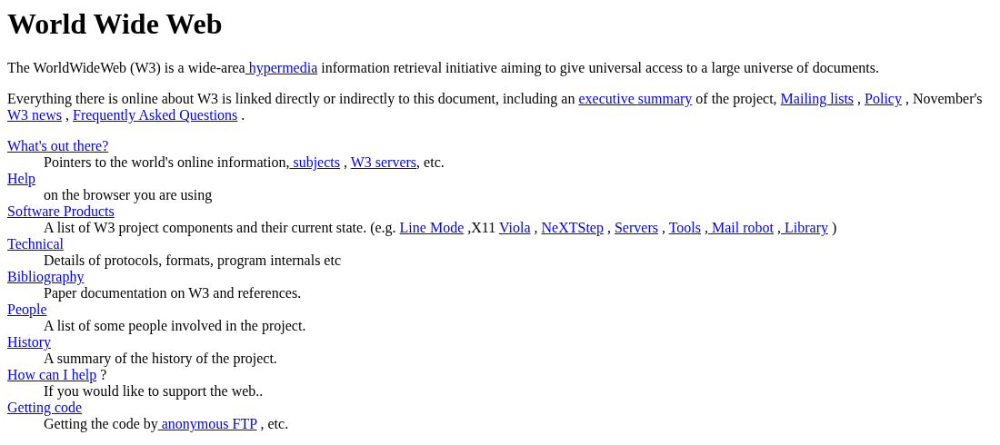

The Evolution of HTTP
From a one-line protocol at a physics lab to the encrypted, multiplexed HTTP/3 we use today.
Where It Started: Tim Berners-Lee and CERN
The Web wasn't built to sell things or share photos. It was built to fix an information problem at CERN, the European particle physics lab near Geneva. CERN worked with more than 17,000 scientists at universities all over the world, and their documents were spread across different computer systems that couldn't read each other's files.
In March 1989, Tim Berners-Lee, a British scientist at CERN, wrote a proposal for an information-sharing system built on hypertext, meaning documents that link directly to other documents anywhere on the network. In November 1990 he and Belgian engineer Robert Cailliau formalized the idea, and by the end of that year CERN had:
- The first web server – a NeXT computer in Berners-Lee's office with a handwritten label: "This machine is a server. DO NOT POWER IT DOWN!!"
- The first website – info.cern.ch, a page explaining the project itself
- The first browser – a program called WorldWideWeb that could both read and edit pages
HTTP was the "transfer" part of that system. Its first job was just to hand a hypertext file from that NeXT machine to whoever asked for it, which explains why the first version was so small.

HTTP/0.9 – The One-Line Protocol (1991)
The original version was so simple it didn't even have a version number. The name "HTTP/0.9" was given to it later. A request was one line: the word GET and the path of the document. The server sent back the file, then closed the connection.
GET /mypage.htmlWhat it did not have:
- No version number, so there was no way to negotiate future changes
- No headers, so neither side could send any extra information
- No status codes. If something went wrong, the server could only send back an HTML page describing the error
- Only HTML files, with no images, downloads or video
- Only GET, so there was no way to send data to a server
Pretty much everything HTTP does today is a fix for something on that list.
HTTP/1.0 – Making It Extensible (1996)
HTTP/1.0 was documented in 1996 as RFC 1945. It was an informational document that described what browsers and servers were already doing, since many different versions were in use by then. The big additions were:
- Version numbers on every request
- Status codes, so software could tell success from failure without reading the page
- Headers on both requests and responses
- Content-Type, which let HTTP carry images, sound and files, not just HTML
GET /mypage.html HTTP/1.0
User-Agent: NCSA_Mosaic/2.0 (Windows 3.1)
HTTP/1.0 200 OK
Date: Tue, 15 Nov 1994 08:12:31 GMT
Server: CERN/3.0 libwww/2.17
Content-Type: text/htmlThe problem it left behind: every request opened its own connection, and that connection closed right after the response. A page with twenty images meant twenty separate connections, each one paying the full setup cost.
HTTP/1.1 – The Long-Running Standard (1997)
HTTP/1.1 came out in January 1997 as RFC 2068, only months after HTTP/1.0. It is still in use today. The main improvements were:
- Persistent connections – one connection can be reused for several requests
- Pipelining – a second request can be sent before the first response arrives
- Chunked transfer – a server can start sending a response before it knows the total size
- Required Host header – lets one server with one IP address host many websites, which made shared hosting possible
- Better caching and content negotiation (agreeing on language, encoding and file type)
Instead of being replaced, HTTP/1.1 kept getting revised: RFC 2616 in 1999, RFC 7230–7235 in 2014, and RFC 9110–9112 in 2022. HTTP/1.1 basically got the vocabulary right. The methods, status codes and headers worked well enough that the next two versions only changed how messages travel, not what they say.
Problems with HTTP/1.1
By the 2010s a single web page could need dozens of files, and the way HTTP/1.1 fetched them turned into the bottleneck.
- Head-of-line blocking. Resources load one after another on a connection. If one file is slow, everything behind it waits, even small files that are ready to go.
- Six connections per site. Browsers worked around this by opening up to six TCP connections at once. It helped, but every connection costs memory and setup time, and six is still a hard limit.
- Repeated headers. Every request re-sends almost the same headers (same User-Agent, same cookies), which wastes a lot of bandwidth.
- Pipelining didn't work in practice. Responses still had to come back in order, so browsers mostly turned it off.
Developers ended up using workarounds like combining images into one "sprite" file or splitting a site across several domains just to get around these limits.
HTTP/2 – Rebuilt for Speed (2015)
HTTP/2 was standardized in May 2015 as RFC 7540. It was based on Google's experimental protocol called SPDY. It changed how messages travel, but not what they mean.
- Binary framing – messages are sent as binary frames instead of plain text, which is faster for computers to process
- Multiplexing – many requests and responses travel over one connection at the same time, so nothing has to wait in line
- Header compression (HPACK) – repeated headers are compressed instead of re-sent in full
- Stream prioritization – important content, like article text, can be sent before less important content
- Server push – the server can send files it knows the page will need before the browser asks
Cloudflare explains multiplexing with an analogy that helped me: imagine mailing someone a novel. HTTP/1.1 is like sending one chapter and waiting for them to confirm it arrived before sending the next. HTTP/2 is like numbering every chapter and mailing them all at once, and letting the reader sort them.
Websites didn't have to change anything to use it. Existing URLs, methods and status codes all worked the same, so adopting HTTP/2 was just a server and browser upgrade.
HTTP/3 and QUIC (2022)
HTTP/2 fixed head-of-line blocking inside HTTP, but all of its streams still shared one TCP connection. TCP delivers data strictly in order, so if one packet gets lost, TCP holds back everything behind it and every stream stalls.
HTTP/3, standardized in June 2022 as RFC 9114, solves this by replacing TCP with QUIC (RFC 9000, 2021). QUIC runs over UDP and handles streams itself, so a lost packet only stalls the stream it belonged to.
- Per-stream loss recovery – other streams keep moving when one packet is lost
- TLS 1.3 built in – encryption is part of QUIC itself, so there is no unencrypted HTTP/3
- Fewer round trips – the connection setup and encryption handshake happen in one step
- Connection migration – a connection can survive switching from Wi-Fi to mobile data
HTTP/3 doesn't immediately replace HTTP/2. Servers usually offer HTTP/1.1, HTTP/2 and HTTP/3 together, and the browser picks the best one both sides support.
Timeline
- 1989 Tim Berners-Lee writes his proposal for the Web at CERN.
- 1990 The first web server, website and browser are running at CERN.
- August 1991 The Web is announced publicly and the software is released. HTTP/0.9 is in use.
- April 30, 1993 CERN releases the Web software royalty-free, so anyone can use it.
- 1996 HTTP/1.0 is documented as RFC 1945.
- 1997 HTTP/1.1 is published as RFC 2068 (later revised in 1999, 2014 and 2022).
- May 2015 HTTP/2 is published as RFC 7540.
- May 2021 QUIC is published as RFC 9000.
- June 2022 HTTP/3 is published as RFC 9114.
Version Comparison
| Version | Approx. Year | Major Improvement |
|---|---|---|
| HTTP/0.9 | 1991 | Simple one-line GET requests for HTML pages |
| HTTP/1.0 | 1996 | Headers, status codes and Content-Type |
| HTTP/1.1 | 1997 | Persistent connections and the required Host header |
| HTTP/2 | 2015 | Multiplexing, binary framing and header compression |
| HTTP/3 | 2022 | Runs over QUIC instead of TCP, with TLS 1.3 built in |
Why HTTP Kept Changing
Looking at all five versions together, the basic request/response idea never went away. A client asks, a server answers with a status code, headers and content. What changed was everything around that conversation:
- Web pages got bigger. One HTML file turned into dozens of images, scripts and stylesheets, so HTTP had to get faster at fetching many files.
- The Web needed more than HTML. Headers and Content-Type made it flexible enough to carry anything.
- Security became required. Plain HTTP sends everything as readable text. HTTPS made encryption normal, and HTTP/3 makes it mandatory.
- People went mobile. Lossy networks and switching between Wi-Fi and cellular are a big part of why QUIC was created.
The early versions (0.9 to 1.1) added meaning to the protocol. HTTP/2 and HTTP/3 didn't change the meaning at all, only the delivery. That was only possible because HTTP/1.1 defined the vocabulary so well in the first place.